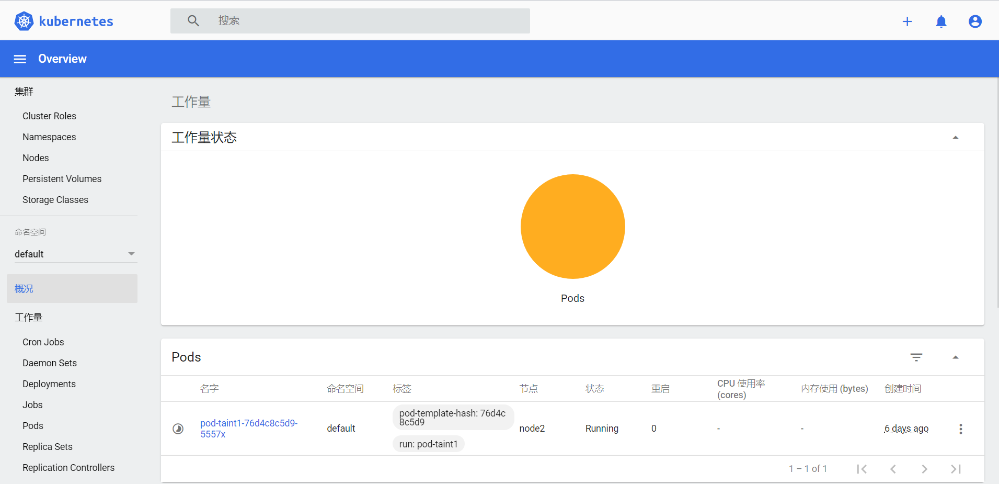
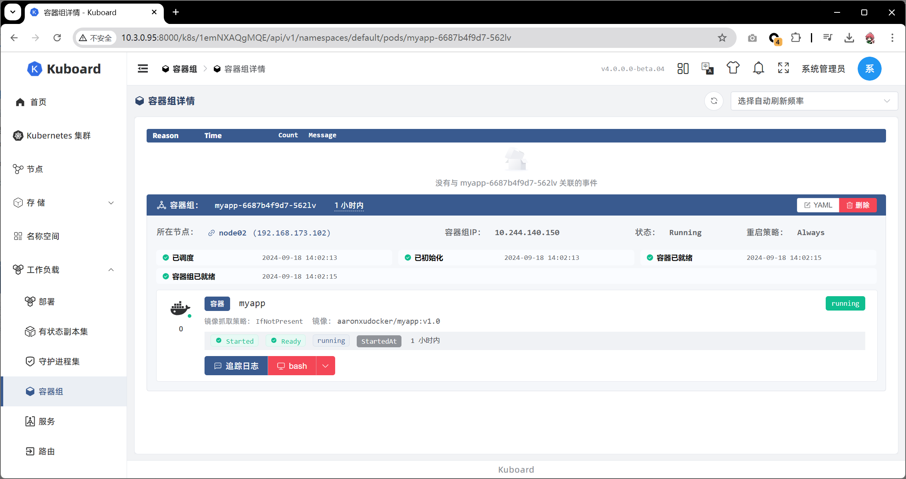

11.DashBoard
DashBoard
之前在kubernetes中完成的所有操作都是通过命令行工具kubectl完成的。其实，为了提供更丰富的用户体验，kubernetes还开发了一个基于web的用户界面（Dashboard）。用户可以使用Dashboard部署容器化的应用，还可以监控应用的状态，执行故障排查以及管理kubernetes中各种资源。
部署Dashboard
\1) 下载yaml，并运行Dashboard
# 下载yaml
[root@k8s-master01 ~]# wget https://raw.githubusercontent.com/kubernetes/dashboard/v2.0.0/aio/deploy/recommended.yaml
# 修改kubernetes-dashboard的Service类型
kind: Service
apiVersion: v1
metadata:
labels:
k8s-app: kubernetes-dashboard
name: kubernetes-dashboard
namespace: kubernetes-dashboard
spec:
type: NodePort # 新增
ports:
- port: 443
targetPort: 8443
nodePort: 30009 # 新增
selector:
k8s-app: kubernetes-dashboard
# 部署
[root@k8s-master01 ~]# kubectl create -f recommended.yaml
# 查看namespace下的kubernetes-dashboard下的资源
[root@k8s-master01 ~]# kubectl get pod,svc -n kubernetes-dashboard
NAME READY STATUS RESTARTS AGE
pod/dashboard-metrics-scraper-c79c65bb7-zwfvw 1/1 Running 0 111s
pod/kubernetes-dashboard-56484d4c5-z95z5 1/1 Running 0 111s
NAME TYPE CLUSTER-IP EXTERNAL-IP PORT(S) AGE
service/dashboard-metrics-scraper ClusterIP 10.96.89.218 <none> 8000/TCP 111s
service/kubernetes-dashboard NodePort 10.104.178.171 <none> 443:30009/TCP 111s
2）创建访问账户，获取token
# 创建账号
[root@k8s-master01-1 ~]# kubectl create serviceaccount dashboard-admin -n kubernetes-dashboard
# 授权
[root@k8s-master01-1 ~]# kubectl create clusterrolebinding dashboard-admin-rb --clusterrole=cluster-admin --serviceaccount=kubernetes-dashboard:dashboard-admin
# 获取账号token
[root@k8s-master01 ~]# kubectl get secrets -n kubernetes-dashboard | grep dashboard-admin
dashboard-admin-token-xbqhh kubernetes.io/service-account-token 3 2m35s
[root@k8s-master01 ~]# kubectl describe secrets dashboard-admin-token-xbqhh -n kubernetes-dashboard
Name: dashboard-admin-token-xbqhh
Namespace: kubernetes-dashboard
Labels: <none>
Annotations: kubernetes.io/service-account.name: dashboard-admin
kubernetes.io/service-account.uid: 95d84d80-be7a-4d10-a2e0-68f90222d039
Type: kubernetes.io/service-account-token
Data
====
namespace: 20 bytes
token: eyJhbGciOiJSUzI1NiIsImtpZCI6ImJrYkF4bW5XcDhWcmNGUGJtek5NODFuSXl1aWptMmU2M3o4LTY5a2FKS2cifQ.eyJpc3MiOiJrdWJlcm5ldGVzL3NlcnZpY2VhY2NvdW50Iiwia3ViZXJuZXRlcy5pby9zZXJ2aWNlYWNjb3VudC9uYW1lc3BhY2UiOiJrdWJlcm5ldGVzLWRhc2hib2FyZCIsImt1YmVybmV0ZXMuaW8vc2VydmljZWFjY291bnQvc2VjcmV0Lm5hbWUiOiJkYXNoYm9hcmQtYWRtaW4tdG9rZW4teGJxaGgiLCJrdWJlcm5ldGVzLmlvL3NlcnZpY2VhY2NvdW50L3NlcnZpY2UtYWNjb3VudC5uYW1lIjoiZGFzaGJvYXJkLWFkbWluIiwia3ViZXJuZXRlcy5pby9zZXJ2aWNlYWNjb3VudC9zZXJ2aWNlLWFjY291bnQudWlkIjoiOTVkODRkODAtYmU3YS00ZDEwLWEyZTAtNjhmOTAyMjJkMDM5Iiwic3ViIjoic3lzdGVtOnNlcnZpY2VhY2NvdW50Omt1YmVybmV0ZXMtZGFzaGJvYXJkOmRhc2hib2FyZC1hZG1pbiJ9.NAl7e8ZfWWdDoPxkqzJzTB46sK9E8iuJYnUI9vnBaY3Jts7T1g1msjsBnbxzQSYgAG--cV0WYxjndzJY_UWCwaGPrQrt_GunxmOK9AUnzURqm55GR2RXIZtjsWVP2EBatsDgHRmuUbQvTFOvdJB4x3nXcYLN2opAaMqg3rnU2rr-A8zCrIuX_eca12wIp_QiuP3SF-tzpdLpsyRfegTJZl6YnSGyaVkC9id-cxZRb307qdCfXPfCHR_2rt5FVfxARgg_C0e3eFHaaYQO7CitxsnIoIXpOFNAR8aUrmopJyODQIPqBWUehb7FhlU1DCduHnIIXVC_UICZ-MKYewBDLw
ca.crt: 1025 bytes
3）通过浏览器访问Dashboard的UI
在登录页面上输入上面的token

出现下面的页面代表成功

使用DashBoard
本章节以Deployment为例演示DashBoard的使用
查看
选择指定的命名空间dev，然后点击Deployments，查看dev空间下的所有deployment

扩缩容
在Deployment上点击规模，然后指定目标副本数量，点击确定

编辑
在Deployment上点击编辑，然后修改yaml文件，点击确定

查看Pod
点击Pods, 查看pods列表

操作Pod
选中某个Pod，可以对其执行日志（logs）、进入执行（exec）、编辑、删除操作

Dashboard提供了kubectl的绝大部分功能，这里不再一一演示
kuboard
特点介绍
相较于 Kubernetes Dashboard 等其他 Kubernetes 管理界面，Kuboard 的优势更加明显，官方网站：https://kuboard.cn/
安装教程
https://kuboard.cn/v4/install/quickstart.html
安装好后链接上集群，最终界面如下

学前沿IT，到英格科技!本文发布时间： 2025-03-30 23:07:56